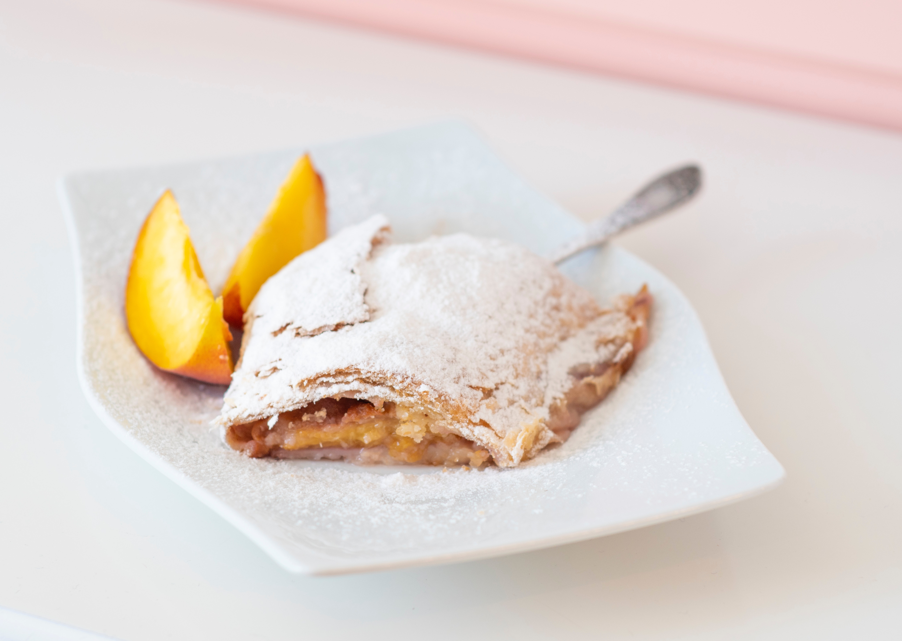

STRUDEL DE MANZANA
El strudel (que significa remolino) es un pastel típico del centro de Europa, y concretamente en Alemania. Existen distintas versiones y tradición en otros países, pero este strudel de manzana alemán es la receta más reconocida. El interior está compuesto por manzanas caramelizadas y jugosas acompañadas de algún fruto seco (generalmente nueces) y canela. El exterior se puede elaborar con distintas masas, como el hojaldre, pero sin duda la versión más crujiente y auténtica es la que se elabora con pasta brick, también llamada pasta filo. El resultado es muy sabroso y ligero, nada graso, y queda ideal acompañado de un poco de helado o yogurt para darle el contraste de temperatura y textura.